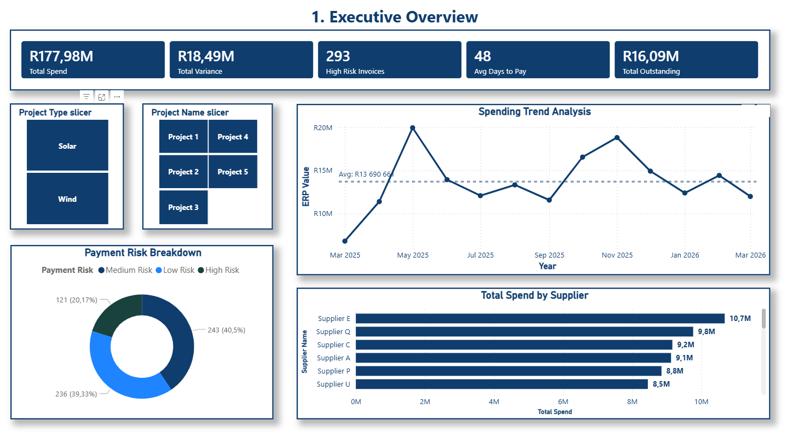
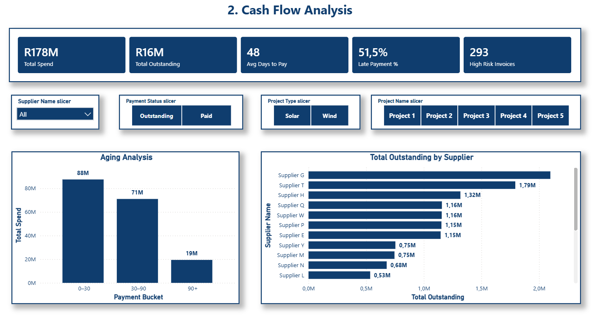
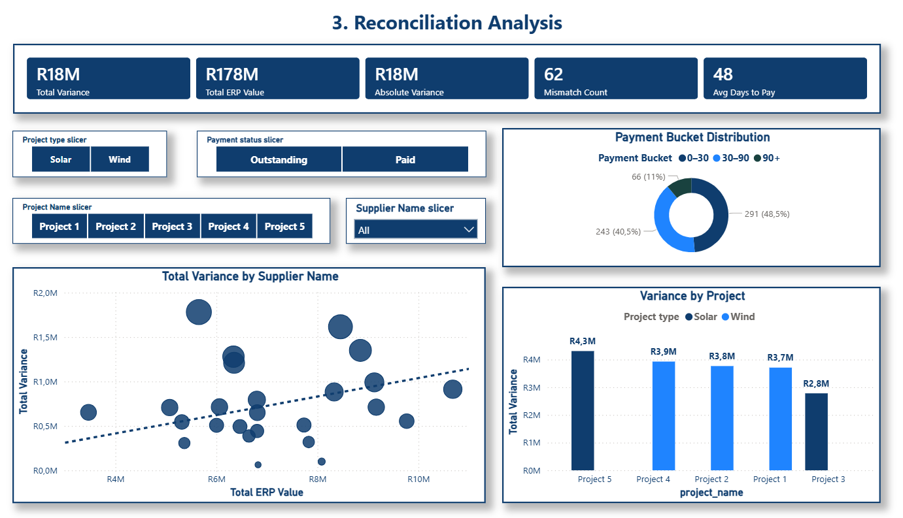
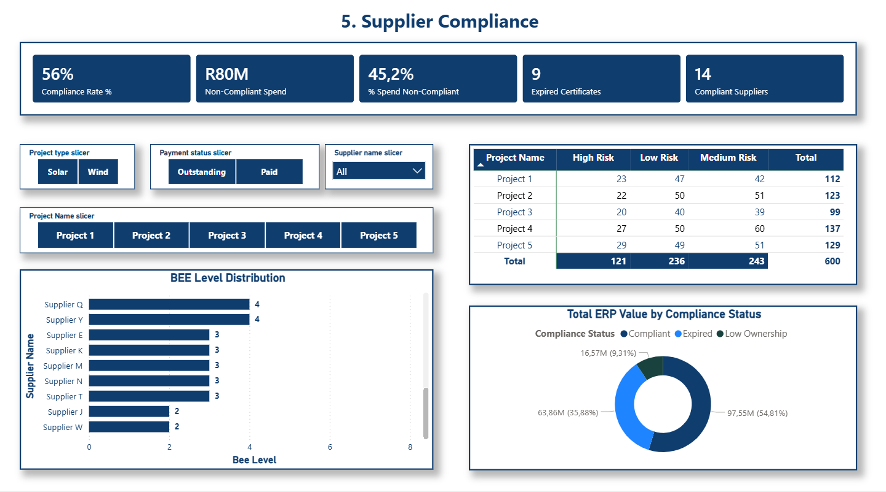
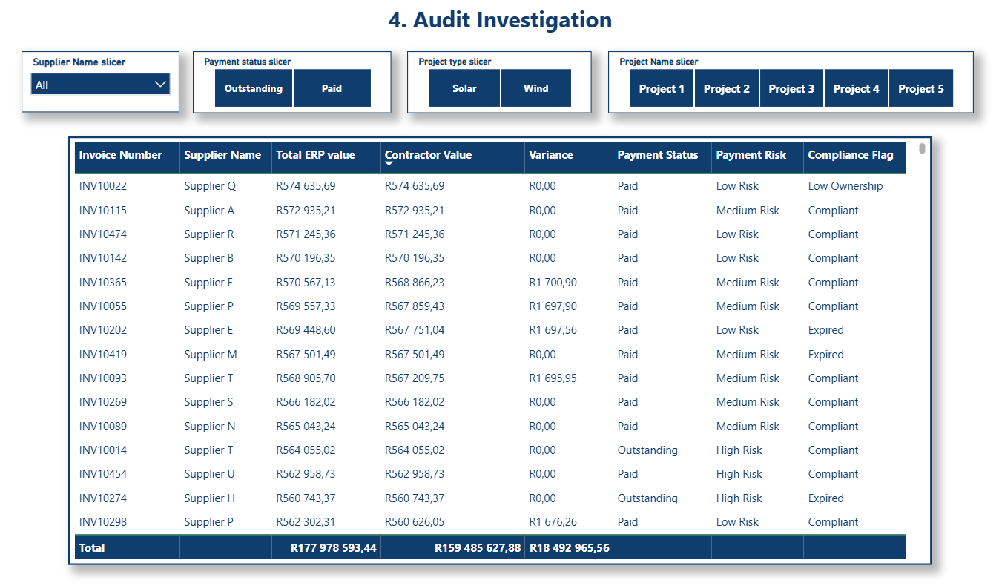

Finance · Data Analyst · ERP/Finance Systems · Renewable Energy
Target roles: Financial Analyst · Data Analyst · ERP/Finance Systems Analyst · Renewable Energy Finance
Finance professional with experience in financial reporting, reconciliations, and operational finance in the mining sector, combined with growing expertise in data analytics and business intelligence.
Skilled in building end-to-end data solutions using SQL and Power BI, with a proven track record of recovering R11 million in SAP commitments and improving financial visibility and cost control.
Passionate about bridging finance, data, and renewable energy to support better decision-making and sustainable infrastructure development.
I am a finance and data professional with a strong foundation in accounting, financial governance, and operational finance, with experience supporting large-scale industrial and capital-intensive environments. My work focuses on improving financial transparency, strengthening internal controls, and turning complex operational data into actionable insights for better decision-making.
During my time at Sibanye Stillwater, I identified and recovered approximately R11 million in incorrectly parked and aged SAP commitments, improving budget availability, cost centre accuracy, and financial governance. I performed cost and variance analysis against approved business plans, supported CAPEX tracking, and strengthened compliance through financial reconciliations and operational coordination across finance, procurement, and operations teams.
I am particularly interested in the intersection of finance, data analytics, and renewable energy, and I am building expertise in SQL, Power BI, and data engineering to create end-to-end financial and analytics solutions. My goal is to contribute to organizations that value strong governance, data-driven decision-making, and sustainable infrastructure development.
Open to graduate, junior, and early-career roles in financial analysis, data analytics, ERP/finance systems, and renewable energy finance.
Experience across finance, data analytics, and industrial operations, with growing focus on systems and renewable energy finance.
Completed degree with focus on financial accounting, management accounting, and taxation. Foundation for analytical and quantitative roles in finance and data analytics.
An end-to-end data solution for actionable spend and cost insights.
Designed an end-to-end procurement and financial dashboard using SQL and Power BI to deliver actionable spend and cost insights. Built a relational database structure to analyze spend patterns, supplier performance, and cost drivers.
Organizations often struggle with fragmented procurement and financial data scattered across systems. Without integrated analytics, decision-makers lack visibility into spend patterns, supplier performance, and cost drivers.
The result is a centralized analytics platform that empowers procurement and finance teams with data-driven insights, enabling better supplier management, cost optimization, and strategic decision-making.
Built using a four-layer architecture to ensure scalability, traceability, and data integrity from raw input to executive dashboard.
Multiple dashboard pages designed for different stakeholder needs — from executive overview to detailed spend analysis.
High-level KPIs: total spend, supplier count, payment metrics, and spend by category. Quick pulse-check for leadership.
Spend trends over time, category breakdown, and supplier spend concentration. Identify top spend categories and suppliers.
Supplier scorecards, compliance tracking, and performance metrics. Evaluate supplier reliability and risk.
Payment trends, aging analysis, and outstanding balances. Identify bottlenecks in payment cycles.





Spend patterns — Category-level spend analysis reveals cost drivers and optimization opportunities.
Supplier concentration — Identify over-reliance on key suppliers and diversify risk.
Payment efficiency — Payment cycle analysis reveals cash flow bottlenecks and opportunities for working capital improvement.
Cost drivers — Identify the factors driving cost increases across categories and time periods.
Performance outliers — Flag suppliers with unusual spend patterns or performance issues.
Trend forecasting — Historical spend trends inform budget planning and cost forecasting.
With a new dataset, this system can be fully adapted by replacing source data in the staging layer, re-running transformation logic, and refreshing the Power BI model. Applicable across:
Mining & heavy industry
Renewable energy projects
Construction & infrastructure
SMEs & growing businesses
Looking to strengthen internal controls, supplier management, or data infrastructure?
Let's
explore what's possible for your business or project.
University of Johannesburg
Graduated · April 2022ALX Africa
Completed · December 2025DLO Energy & EWSETA
Completed · January 2026ALX Africa
Completed · August 2025ALX Africa
In progressCurrently building: Power BI Professional Certification & Advanced SQL
Open to graduate, junior, and early-career roles in finance, data, and renewable energy.
Based in Johannesburg — open to remote, hybrid, and on-site roles across South Africa and internationally.
thatomapheto6@gmail.com
Johannesburg, South Africa
Financial Analyst · Data Analyst · ERP/Finance Systems Analyst · Renewable Energy Finance
Graduate · Junior · Early-career roles
Within 24 hours
Professional references available upon request.